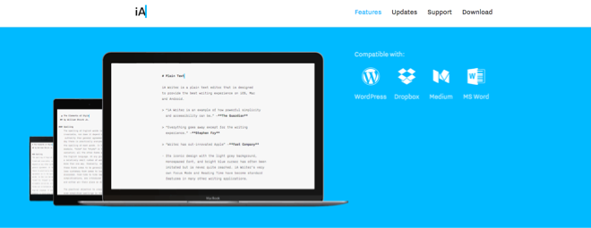

The redesign was focused on showcasing the various features of the app. There were mountains of great content but I found there was no cohesive visual language to demonstrate the range of capabilities of the app. Much of the information was spread across different mediums such as blog posts, videos and news articles. With the redesign we wanted everything to be concentrated in one area in the same style.
So we could keep featuring video content, we decided to match the style of the website to that of the videos. Using the colour of the cursor of the logo of the app for banners, buttons and links I tried to make it obvious which content was connected to each other while distinguishing it from the content of the company website of iA Inc.
